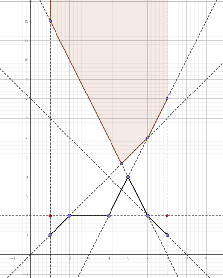
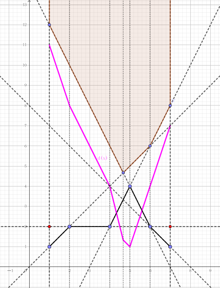

致力于建设全国示范和谐小村庄的 H 村村长 scx，决定在村中建立一个瞭望塔，以此加强村中的治安。
我们将 H 村抽象为一维的轮廓，如下图所示：

我们可以用一条山的上方轮廓折线 $(x_1, y_1), (x_2, y_2), \cdots, (x_n, y_n)$ 来描述 H 村的形状，这里 $x_1 < x_2 < \cdots < x_n$。瞭望塔可以建造在 $[x_1, x_n]$ 间的任意位置, 但必须满足从瞭望塔的顶端可以看到 H 村的任意位置。
可见在不同的位置建造瞭望塔，所需要建造的高度是不同的。为了节省开支，scx 希望建造的塔高度尽可能小。
请你写一个程序，帮助 scx 计算塔的最小高度。
第一行包含一个正整数 $n$ ($n \leq 300$)，表示轮廓折线的节点数目。
第二行包含 $n$ 个整数 $x_1, x_2, \cdots, x_n$。
第三行包含 $n$ 个整数 $y_1, y_2, \cdots, y_n$，其中 ($|x_i|, |y_i| \leq 10^6$)。
输出一行一个实数，为塔的最小高度，精确到小数点后三位。
首先思考如果一个点能看见任意位置，它需要满足什么条件。考虑这样满足条件的点的最低点，可以发现，它看某一条线段是平行的。
对于某一条线段，如果它能看到，那么它就一定在那条线段所在直线的上方。如下图所示：
又因为题目描述所说，塔只能建在 $[x_1, x_n]$ 之间的位置，因此再作两条垂直于 $x$ 轴的直线，于是可行的点就在这 $n + 1$ 条直线的半平面交上。
于是像这道题一样跑一遍半平面交。然后因为原题要求塔的高度尽可能小，于是我们需要在 $x$ 轴上找一点，作 $x$ 轴的垂线，与上下两条折线相交，求截得线段的最小值。
作距离 $d$ 关于横坐标 $x$ 的函数 $d(x)$，如下图所示：
注意每两条虚线之间，上下两条折线都式直线，因此函数 $d(x)$ 在该处也是直线。由一次函数的单调性，极值一定在某个端点取到，于是线性分段函数 $d(x)$ 的极值一定在某个节点处取到，可能是下面折线的节点，也可能是上面折线的节点。
于是我们就可以枚举所有的节点，显然它不超过 $2n$ 个，分别计算出 $d(x)$ 的值，然后取个最小值即可。
#include <bits/stdc++.h>
#define N 340
using namespace std;
const double eps = 1e-8;
struct vec2{
double x, y;
vec2 (double x0 = 0.0, double y0 = 0.0): x(x0), y(y0) {}
inline vec2 operator + (const vec2 &B) const {return vec2(x + B.x, y + B.y);}
inline vec2 operator - (const vec2 &B) const {return vec2(x - B.x, y - B.y);}
inline vec2 operator * (double k) const {return vec2(x * k, y * k);}
inline double operator * (const vec2 &B) const {return x * B.x + y * B.y;}
inline double operator ^ (const vec2 &B) const {return x * B.y - y * B.x;}
inline double norm2() const {return *this * *this;}
}p[N], q[N];
struct line{
double A, B, C; // Ax + By + C = 0, where B >= 0.
line (double A0 = 0.0, double B0 = 0.0, double C0 = 0.0): A(A0), B(B0), C(C0) {}
inline void normalize() {if(B < 0.0) {A = -A; B = -B; C = -C;}}
inline vec2 normVec() const {return vec2(A, B);}
}l[N], st[N], tl;
int n, i, j, top;
double ans, vy;
int __c_x[N], __c_y[N];
// compare lines with slopes.
inline bool cmp(const line u, const line v){
double uB = 1.0 / u.B, vB = 1.0 / v.B, K = u.A * uB - v.A * vB;
return -eps < K && K < eps ? u.C * uB > v.C * vB : K > 0.0;
}
// return true if u // v.
inline bool parallel(const line u, const line v) {return (u.normVec() ^ v.normVec()) < eps;}
// return the intersection of 2 lines.
inline vec2 intersection(const line u, const line v){
double Det = 1.0 / (u.normVec() ^ v.normVec());
return vec2(u.B * v.C - u.C * v.B, u.C * v.A - u.A * v.C) * Det;
}
// return a line through 2 given points.
inline line getLine(const vec2 u, const vec2 v) {return line(u.y - v.y, v.x - u.x, u ^ v);}
// return true if the last line failed the HPI test.
inline bool failed(const line a, const line b, const line c){
vec2 P = intersection(a, b);
return c.A * P.x + c.B * P.y + c.C < eps; // Ax + By + C < 0.
}
void Half_Plane_Intersection(){
int i; top = 0;
st[++top] = l[0];
for(i = 1; i <= n; ++i){
for(; top > 1 && parallel(st[top], l[i]); --top);
for(; top > 1 && failed(st[top - 1], st[top], l[i]); --top);
st[++top] = l[i];
}
for(i = 1; i < top; ++i) q[i] = intersection(st[i], st[i + 1]);
}
inline void down(double &x, const double y) {x > y ? x = y : 0.0;}
int main(){
scanf("%d", &n);
for(i = 1; i <= n; ++i) scanf("%d", __c_x + i);
for(i = 1; i <= n; ++i) scanf("%d", __c_y + i);
for(i = 1; i <= n; ++i) p[i] = vec2((double)__c_x[i], (double)__c_y[i]);
p[0] = vec2((double)__c_x[1], __c_y[1] + 1.0);
p[n + 1] = vec2((double)__c_x[n], __c_y[n] + 1.0);
for(i = 0; i <= n; ++i) l[i] = getLine(p[i], p[i + 1]);
for(i = 1; i < n; ++i) l[i].normalize();
sort(l + 1, l + n, cmp);
Half_Plane_Intersection();
for(i = 0; i <= n; ++i) l[i] = getLine(p[i], p[i + 1]);
ans = INFINITY;
for(i = 1; i <= n; ++i)
for(j = 1; j < top - 1; ++j)
if(q[j].x <= p[i].x && p[i].x <= q[j + 1].x){
tl = line(1.0, 0.0, -p[i].x);
vy = intersection(st[j + 1], tl).y;
down(ans, vy - p[i].y);
}
for(j = 1; j < top; ++j)
for(i = 1; i < n; ++i)
if(p[i].x <= q[j].x && q[j].x <= p[i + 1].x){
tl = line(1.0, 0.0, -q[j].x);
vy = intersection(l[i], tl).y;
down(ans, q[j].y - vy);
}
printf("%.3lf\n", ans + eps);
return 0;
}
坑1：不要忘记加上两条垂直于 $x$ 轴的线，并且按照半平面交的方法用单调栈插入直线。
坑2：<important>由于本题没有 Special Judge，又测试点的答案可能为 $0$，因此程序可能输出 -0.00 导致判错，因此需要加上 eps 后输出。